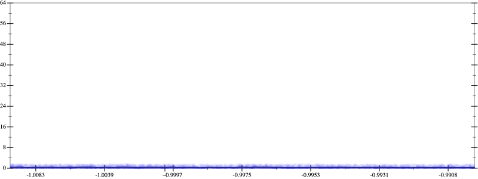
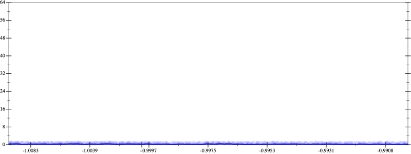

Initial program 0.6
\[\left(\left(\left(\left(\left(\left(\left(1.0 + -8.0 \cdot x\right) + 14.0 \cdot \left(x \cdot x\right)\right) + -9.333333 \cdot \left(\left(x \cdot x\right) \cdot x\right)\right) + 2.916667 \cdot \left(\left(\left(x \cdot x\right) \cdot x\right) \cdot x\right)\right) + -0.466667 \cdot \left(\left(\left(\left(x \cdot x\right) \cdot x\right) \cdot x\right) \cdot x\right)\right) + 0.038889 \cdot \left(\left(\left(\left(\left(x \cdot x\right) \cdot x\right) \cdot x\right) \cdot x\right) \cdot x\right)\right) + -0.001587 \cdot \left(\left(\left(\left(\left(\left(x \cdot x\right) \cdot x\right) \cdot x\right) \cdot x\right) \cdot x\right) \cdot x\right)\right) + 2.5 \cdot 10^{-05} \cdot \left(\left(\left(\left(\left(\left(\left(x \cdot x\right) \cdot x\right) \cdot x\right) \cdot x\right) \cdot x\right) \cdot x\right) \cdot x\right)\]
Applied simplify0.4
\[\leadsto \color{blue}{\left({\left(x \cdot x\right)}^{3} \cdot \left(2.5 \cdot 10^{-05} \cdot \left(x \cdot x\right)\right) + {\left(x \cdot x\right)}^{3} \cdot \left(-0.001587 \cdot x + 0.038889\right)\right) + \left(\left(\left(x \cdot x\right) \cdot \left(-9.333333 \cdot x + 14.0\right) + \left(\left(x \cdot x\right) \cdot \left(x \cdot x\right)\right) \cdot \left(2.916667 + -0.466667 \cdot x\right)\right) + \left(x \cdot -8.0 + 1.0\right)\right)}\]
- Using strategy
rm Applied associate-*r*0.4
\[\leadsto \left({\left(x \cdot x\right)}^{3} \cdot \left(2.5 \cdot 10^{-05} \cdot \left(x \cdot x\right)\right) + {\left(x \cdot x\right)}^{3} \cdot \left(-0.001587 \cdot x + 0.038889\right)\right) + \left(\left(\left(x \cdot x\right) \cdot \left(-9.333333 \cdot x + 14.0\right) + \color{blue}{\left(\left(\left(x \cdot x\right) \cdot x\right) \cdot x\right)} \cdot \left(2.916667 + -0.466667 \cdot x\right)\right) + \left(x \cdot -8.0 + 1.0\right)\right)\]
Applied simplify0.4
\[\leadsto \left({\left(x \cdot x\right)}^{3} \cdot \left(2.5 \cdot 10^{-05} \cdot \left(x \cdot x\right)\right) + {\left(x \cdot x\right)}^{3} \cdot \left(-0.001587 \cdot x + 0.038889\right)\right) + \left(\left(\left(x \cdot x\right) \cdot \left(-9.333333 \cdot x + 14.0\right) + \left(\color{blue}{{x}^{3}} \cdot x\right) \cdot \left(2.916667 + -0.466667 \cdot x\right)\right) + \left(x \cdot -8.0 + 1.0\right)\right)\]
Taylor expanded around 0 0.4
\[\leadsto \left({\left(x \cdot x\right)}^{3} \cdot \left(2.5 \cdot 10^{-05} \cdot \left(x \cdot x\right)\right) + {\left(x \cdot x\right)}^{3} \cdot \left(-0.001587 \cdot x + 0.038889\right)\right) + \left(\left(\color{blue}{\left(14.0 \cdot {x}^{2} - 9.333333 \cdot {x}^{3}\right)} + \left({x}^{3} \cdot x\right) \cdot \left(2.916667 + -0.466667 \cdot x\right)\right) + \left(x \cdot -8.0 + 1.0\right)\right)\]
Applied simplify0.3
\[\leadsto \color{blue}{\left(\left(\left(x \cdot x\right) \cdot \left(x \cdot x\right)\right) \cdot \left(2.916667 + x \cdot -0.466667\right) + \left(1.0 + -8.0 \cdot x\right)\right) + \left(\left(x \cdot \left(x \cdot 2.5 \cdot 10^{-05}\right) + \left(-0.001587 \cdot x + 0.038889\right)\right) \cdot \left({x}^{3} \cdot {x}^{3}\right) + \left(x \cdot x\right) \cdot \left(14.0 - x \cdot 9.333333\right)\right)}\]
- Using strategy
rm Applied pow20.3
\[\leadsto \left(\left(\left(x \cdot x\right) \cdot \color{blue}{{x}^{2}}\right) \cdot \left(2.916667 + x \cdot -0.466667\right) + \left(1.0 + -8.0 \cdot x\right)\right) + \left(\left(x \cdot \left(x \cdot 2.5 \cdot 10^{-05}\right) + \left(-0.001587 \cdot x + 0.038889\right)\right) \cdot \left({x}^{3} \cdot {x}^{3}\right) + \left(x \cdot x\right) \cdot \left(14.0 - x \cdot 9.333333\right)\right)\]
Applied pow20.3
\[\leadsto \left(\left(\color{blue}{{x}^{2}} \cdot {x}^{2}\right) \cdot \left(2.916667 + x \cdot -0.466667\right) + \left(1.0 + -8.0 \cdot x\right)\right) + \left(\left(x \cdot \left(x \cdot 2.5 \cdot 10^{-05}\right) + \left(-0.001587 \cdot x + 0.038889\right)\right) \cdot \left({x}^{3} \cdot {x}^{3}\right) + \left(x \cdot x\right) \cdot \left(14.0 - x \cdot 9.333333\right)\right)\]
Applied pow-prod-up0.3
\[\leadsto \left(\color{blue}{{x}^{\left(2 + 2\right)}} \cdot \left(2.916667 + x \cdot -0.466667\right) + \left(1.0 + -8.0 \cdot x\right)\right) + \left(\left(x \cdot \left(x \cdot 2.5 \cdot 10^{-05}\right) + \left(-0.001587 \cdot x + 0.038889\right)\right) \cdot \left({x}^{3} \cdot {x}^{3}\right) + \left(x \cdot x\right) \cdot \left(14.0 - x \cdot 9.333333\right)\right)\]

 
